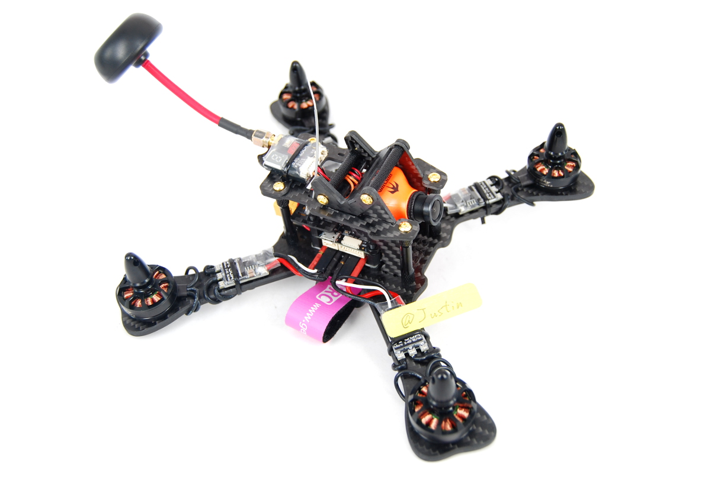

Introduction to course and began project planning.
Week 5 — 02/15–02/21
During this week we finalized, submitted, and received approval for our project proposal.
The proposal outlines the development of a vision-based autonomous UAV tracking system
integrating machine learning perception with a ROS-based control architecture.
The approved proposal document can be accessed here:
Built an initial MuJoCo simulation scene containing a UAV body, a moving ground platform, and a high-contrast marker.
Implemented a top-down “look-down” camera view using a Python-controlled MuJoCo camera (stable across MuJoCo versions).
Added basic marker detection using grayscale thresholding and contour detection.
Computed pixel error between the marker centroid and the image center, and mapped that error to simple planar command signals (not yet applied to UAV motion).
Validated real-time rendering and confirmed the moving platform and marker are consistently visible in the camera view.
Video Demo
Short demo of the MuJoCo look-down camera view with marker detection overlay:
Week 6 — 02/22–02/28
This week upgraded the perception pipeline to use HSV based color segmentation for more reliable red marker detection. We also transitioned from just
visualizing commands to actually applying them to the UAV inside the simulation.
Simulation Progress (MuJoCo)
Implemented HSV color segmentation for red marker detection.
Logged tracking error and command signals for analysis.
Computed pixel error (eu, ev) between marker centroid and image center.
Applied command signals to the UAV free joint in MuJoCo.
Implemented a locked midpoint camera view for clearer demos.
Hardware Selection
We finalized the UAV platform we plan to use for a real-world demo if
deployment is feasible.

Selected UAV platform for potential hardware deployment.